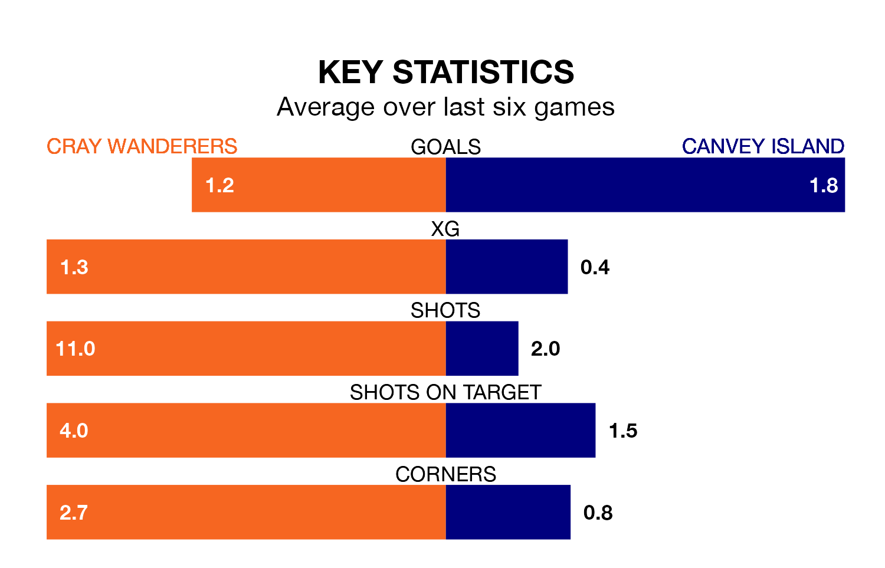

Cray Wanderers face Canvey Island on Wednesday seeking to protect their long unbeaten run in the Isthmian Premier Division.
Cray are unbeaten in five, with three wins and two draws, ahead of the 7.45pm kick-off.
They face a Canvey Island team who have won just two and lost three over the same number of games.
With 35 goals in 29 games so far this season, Cray are scoring at below the league average rate with 1.2 goals per game. But they are conceding fewer than average too, letting in 43 goals at a rate of 1.5 per game.
Canvey Island, meanwhile, are average scorers, with 1.6 goals per game. They have conceded 2.0 goals per game.
In the last five years, Cray and Canvey Island have played each other on four occasions. Cray won one of them, Canvey Island two, and they drew once.
On average, Cray scored 1.2 goals and the Gulls 1.5 in those matches.
Their last meeting was on October 24, when Canvey Island won 2-1 at home.
Wanderers are 15th in the table after 29 games, of which they have won nine and drawn nine, earning 36 points.
The Gulls are two places ahead of the home team in 13th, with 12 wins and two draws putting them on 38 points.
Cray's last match was on Saturday, a 1-0 win against Cheshunt.
Canvey Island lost 3-2 against Margate last time out, also on Saturday.
Updated: 12:18 (UTC), 19/02/24